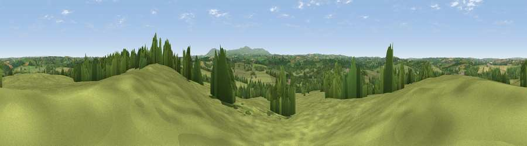

Hatherleigh Moor
#19424 in England · top 30% of its area beats it · near HatherleighThe view, rendered

A 360° render of this exact spot computed from the terrain model, tree cover and land cover — summer colours, afternoon light, calibrated against photographs of famous viewpoints. Real trees, hedges and buildings will differ in detail.
The panorama
Grey silhouette: terrain skyline in each direction (720 bearings, Earth curvature and refraction included). Dashed green: skyline with trees (+15 m) and buildings (+8 m) as obstacles. Blue strip: how far the ground is visible on each bearing.
Where the view opens
Wedge length = distance to the farthest visible ground on that bearing (vegetation-aware). Rings at 10, 25 and 50 km.
What fills the view
78% grassland · 18% woodland · 3% cropland · 1% built-up
Angular shares of the visible panorama (visual magnitude), not map area. Landscape diversity 0.28 (0–1 Shannon).
Key numbers
More beautiful places nearby
The staircase of upgrades: each row has a higher view potential than everything closer. Driving times are estimates from straight-line distance, calibrated against real road routing — check an actual route before setting out.
| Place | Direction | Drive | Score |
|---|---|---|---|
| Viewpoint near Iddesleigh | NNE · 5 km | ~11 min | 56.1 |
| Viewpoint near Iddesleigh | NE · 6 km | ~13 min | 61.0 |
| Viewpoint near Petrockstowe | NW · 7 km | ~15 min | 65.5 |
| Viewpoint near Sourton | S · 14 km | ~25 min | 72.2 |
| Viewpoint near Okehampton | SSE · 14 km | ~26 min | 74.5 |
| Yes Tor | SSE · 15 km | ~27 min | 78.5 |
| Codden Hill | N · 25 km | ~41 min | 81.3 |
| Viewpoint near Parkham | NW · 25 km | ~41 min | 81.7 |
50.82339, -4.06108 · source: dobih hill · position refined by local search. Computed location — check access rights before visiting.